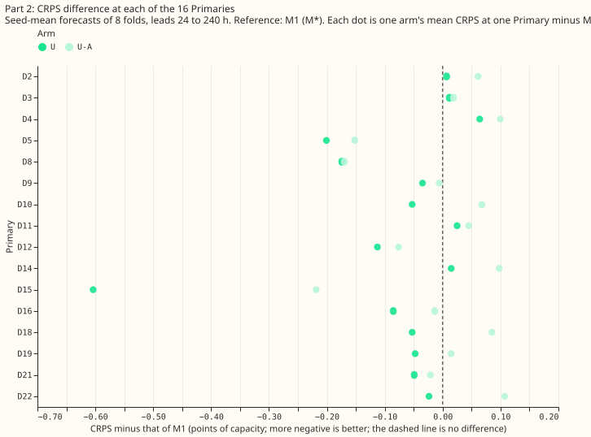
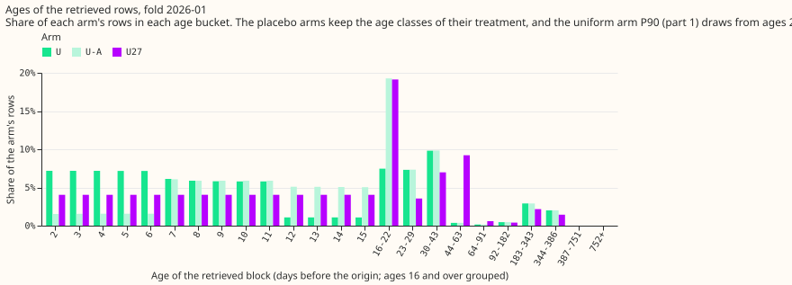
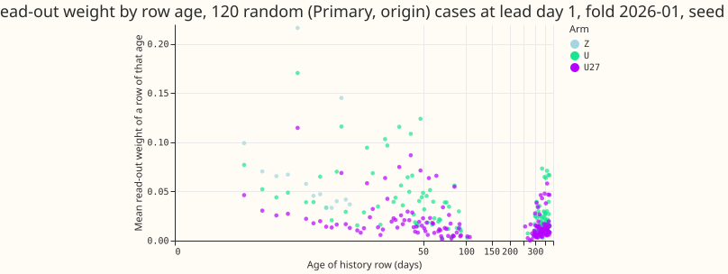
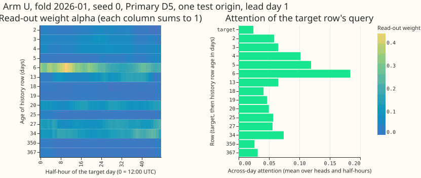
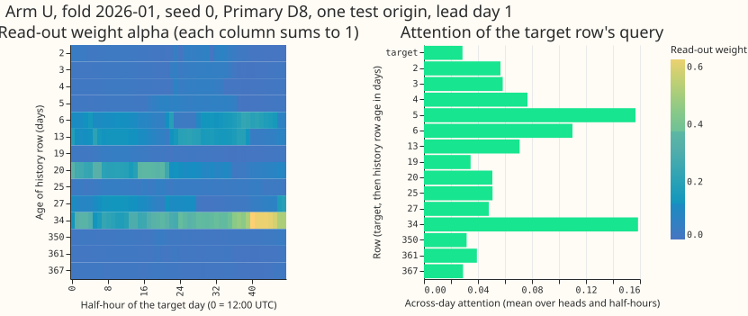
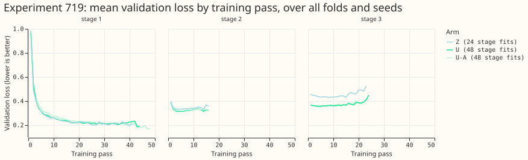
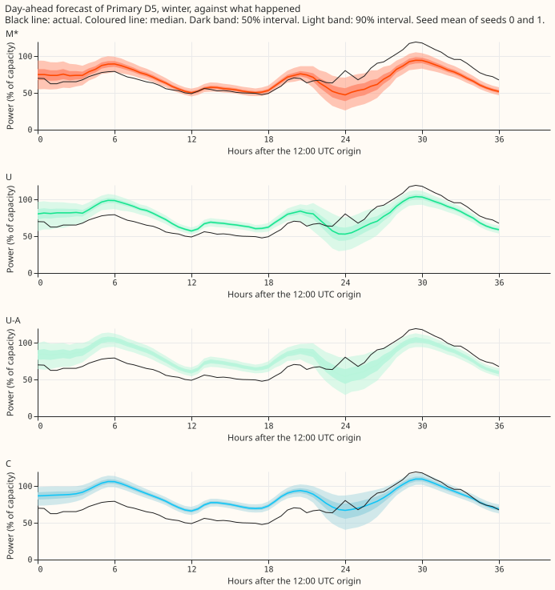
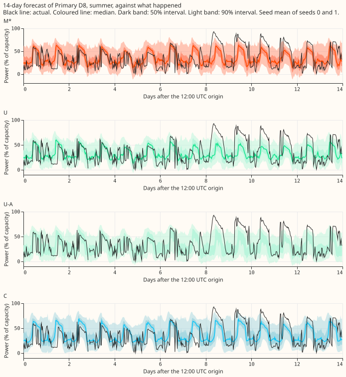

Does the axial-attention network forecast a Primary better when its history rows mix the weather-nearest, most recent, and same-weekday past days?
We asked whether a neural network that forecasts a primary substation's electricity demand does better when the past days it is shown are chosen by similarity to the target day. The network is the axial-attention neural network of experiment 719's parent, experiment 713. It forecasts the demand of 16 primary substations (the substations between NGED's 33 kV and 11 kV networks, called Primaries below) for days 1 to 10 ahead. As input it reads a matrix of 14 past days by 48 half-hours of the substation's own power, and it learns how much weight each past day deserves. Experiment 713 gave the network the last 14 days. Here the 14 past days are a mixture: 5 days whose weather was nearest to the ensemble weather forecast for the target day, the 5 most recent days, and 4 days with the same weekday as the target day, all from the past 379 days.
The mixture forecast slightly better at the 6 Primaries that meter signed power, and not detectably better at the 8 Primaries that meter only apparent power. We scored 8 months of forecasts (2025-11 to 2026-06) at all 16 Primaries, with seeds 0 and 1. The score is the continuous ranked probability score (CRPS), in percentage points of each Primary's capacity, and lower is better. At the 6 signed-power Primaries, the mixture scored 0.055 points below the last 14 days (98.75% interval -0.111 to -0.006). At the 8 apparent-power (megavolt-ampere, MVA) Primaries it scored 0.041 below, with an interval that includes zero (-0.131 to +0.057).
Verdict: small gain. Experiment 713's decision rule gives small gain at the six and no
detectable difference at the eight for the first contrast. Every interval below is at 98.75%
(month-block bootstrap over 8 monthly folds), in CRPS points of capacity, and a negative number
favours the mixture. "The six" and "the eight" below mean those two groups of Primaries.
| Contrast | Group | Point and interval | Reading |
|---|---|---|---|
B1: mixture U minus last 14 days M* |
six | -0.055 [-0.111, -0.006] | small gain |
| B1 | eight | -0.041 [-0.131, +0.057] | no detectable difference |
B2: U minus the matched-age random placebo U-A |
six | -0.062 [-0.100, -0.021] | gain |
| B2 | eight | -0.045 [-0.076, -0.012] | small gain |
The gain is small, and two checks that the decision rule calls for are unread. The cold-night
guard (the score on cold winter nights stays within 0.05 points) and the selection-swap guard (the
sign survives choosing rows with live-fair weather) need scoring that was not run, so the rule's
all guards hold field is false. The leave-one-Primary-out, leave-one-month-out, tail, and
error-of-the-median guards hold at both groups. On the four folds that the earlier CPU exploration
had not tuned on, the report-only reading at 95% is B1 -0.060 [-0.109, -0.014] at the six and -0.128
[-0.177, -0.077] at the eight, and B2 -0.070 [-0.118, -0.014] at the six and -0.052 [-0.081, -0.024]
at the eight. That reading excludes zero at the eight, so the eight's "no detectable difference"
depends on which folds are read. The scores are ceilings for a live forecast, because the mixture's
weather distance reads ERA5 and CAMS weather for the past days and the stored ensemble forecast for
the target day, as experiment 713 documents. The maintainer waived experiment 713's known-answer
gate on 2026-11-24, and this experiment's own gate passed (checks KS1, KS2, and KS3 on synthetic
worlds).
Further results, computed after the main scoring
Reverse flow is not visible in the data at the eight, so these readings cannot show that it explains the weaker result there. The maintainer asked whether reverse flow at D8 is the reason. The readings are post hoc, report-only, and computed from the stored forecasts.
B1 is below zero at 11 of the 16 Primaries and above zero at 5. The eight's B1 is positive at D2 (+0.007), D3 (+0.012), and D4 (+0.064), and negative at D8 (-0.174) and D12 (-0.113).
D8, the Primary the maintainer named as the reverse-flow case, is where the mixture helps the eight most. Without D8 the eight's B1 is -0.022, and D8 alone is -0.174. Leaving D8 out makes the eight weaker, so D8's contribution is not the cause of the weaker reading.
Only the six can show reverse flow. The eight are stored as apparent power, which has no sign, so D8's reverse flow is invisible. At the six, 792 forecast rows (one row is one Primary, origin, and lead time) have negative observed power. They all belong to D10 and cover 88 distinct half-hours. B1 on those rows is -0.499, against -0.055 on the others. The 792 rows are 0.8% of D10's rows, so this is an observation and not a result.
The eight's monthly B1 swings about twice as much as the six's. The standard deviation of the 8 monthly means is 0.114 at the eight (range -0.185 to +0.139), 0.123 at the eight without D8, and 0.063 at the six. B2 has the same spread at both groups (0.040 and 0.048). Month-to-month spread is the likelier reason for the wider interval at the eight.
The network relies on its history rows. Masking all history power at prediction (a read-out with
no refit) raises the error of U by 0.40 points at the six [0.27, 0.54] and 0.33 at the eight
[0.24, 0.43], at 95%. The error of R of experiment
718 rises by about 0.30 at
both groups.
The 28-row and Christmas variants are report-only. U27 has 28 rows: 1 target row and 27
history rows, namely the last 14 days plus 7 weather-nearest and 6 same-weekday rows from older
days. Scored on the 4 screen folds, U27 minus M* is -0.024 at the six [-0.065, +0.014] and
+0.015 at the eight [-0.007, +0.038]. U27 minus its random placebo U27-A is -0.060 at the six
[-0.122, -0.002]. UX replaces the weather rows with calendar-matched rows of earlier winters for
the days around Christmas, and was scored on folds 2025-12 and 2026-01. UX minus U is +0.062 at
the six [+0.054, +0.069] and +0.070 at the eight [+0.027, +0.114], so UX forecast worse than U
on those two folds. UX minus M* is -0.082 at the six [-0.101, -0.062]. The refit of M* through
this experiment's code (arm Z) reproduces experiment 713's forecasts exactly (difference 0.000).
Plots
- Contrasts by Primary.

- Ages of the retrieved rows, fold 2026-01.

- Read-out weight by row age, from one review.

- Attention maps of
Uat D5 and D8, from one review.

- Training and validation loss by pass, not yet reviewed.

- Day-ahead and 14-day forecasts of
M*,U,U-A, and the Candidate at D5 and D8 in winter and summer.

Checks
- Triggers. Audit triggers 1 (placebo and
Zrule) and 5 (nested arm beating its container) did not fire on the screen. The error-of-the-median guard moves with CRPS at both groups, so trigger 3 did not fire. Leave-one-Primary-out keeps the sign at both groups, so trigger 4 did not fire. - Review of the new analysis code. One Opus review
(
briefs/msa_architecture/f9_result_code_review.md) covered the post hoc, masked-history, loss-plot, attention-plot, andsecondarycode. It reproduced the printed B1 numbers, the D8-only value, and the 792 negative rows exactly. It found two faults in the attention plots (ERA5 weather in the batch, and absent rows drawn as real rows of age 2), and the charts were redrawn and viewed after the fix. The review did not recompute the masked-history scores, thesecondarycontrasts, or B2. A Sonnet check confirmed that thesecondarycommand changes no line of the headline path (file hash3706cc64757a1bfa). - Not done. The selection-swap read-out (rows chosen with live-fair weather) was not built, so the cold-night guard and the selection-swap guard are unread.
- Unlogged events. NGED's load-shift logs may miss events, so the clean-lag rows may hold events no label covers.
The plan as registered
The sections below are the plan as registered before any fit, followed by the method, departures, reviews, and files.
We ask whether the axial-attention network of experiment 713 forecasts a Primary substation's demand better when its 14 history rows are a union of the 5 weather-nearest, the 5 most recent, and the 4 same-weekday blocks of the last 379 days, instead of the last 14 days. This is part 2 of follow-up F9. Part 1 (experiment 718) tests the weather distance alone over 91 days and fixes the arms, the code, and the decision table that this page reuses. This page is the plan: no neural network has been fitted, and every number below is a design value or a figure from an earlier experiment.
The honest expectation is a tie or a small gain. In the CPU-only exploration of F9, a plain mean
of the union's rows beat a plain mean of the last 14 days by 0.80 points of MAE at 15 rows, and beat
the best single measure by 0.18. The union was the best of 64 settings reported on the evaluation
folds, on weather that a live service would not hold for the youngest blocks, so the 0.18 is a
hypothesis. Experiment 713's interim screen puts M* only 0.13 points (the six) and 0.31 points
(the eight) ahead of 14 random days of the past year.
Why this runs
This experiment runs on the maintainer's instruction, as part 1 does. On 2026-11-23 the
maintainer approved F8 and F9 ("yes, please run these autonomously at the appropriate time.") and,
relayed by the manager, said: "I'd be generous to the similar days idea. I'm optimistic that the MSA
will be able to extract information from similar days that a simpler approach can't." The rules of
experiment 718 on experiment
713's verdict, on the confirmation obtained from the maintainer, and on the stop rule apply to this
page unchanged. Experiment 713's section 1.8 closes the "28-row layout" after not supported, and
U27 is a different layout (1 target row and 27 history rows, where experiment 713's layout has 14
target rows and 14 history rows). The maintainer's instruction replaces the manager's earlier
condition that arm R as specified would not run.
What is compared
| Arm | History rows | Rows | Seeds | Role |
|---|---|---|---|---|
M* |
Ages 2 to 15 | 15 | Stored | Control; never refitted |
U |
5 weather-nearest, 5 most recent, 4 same-weekday blocks, ages 2 to 379 | 15 | 0, 1 (then 2 to 4) | Treatment |
U-A |
The 5 most recent rows of U, and 9 random blocks whose ages match the other 9 rows of U |
15 | As U |
Counted placebo |
U27 |
Ages 2 to 15, plus 7 weather-nearest and 6 same-weekday blocks of ages 16 to 379 | 28 | 0, 1 on 4 folds | Secondary: the largest affordable layout |
U27-A |
Ages 2 to 15, plus 13 age-matched random blocks | 28 | 0, 1 on 4 folds | Secondary placebo of U27 |
UX |
U, with calendar-nearest blocks of earlier winters for targets from 20 December to 5 January |
15 | 0, 1 on 2 folds | Secondary: the Christmas switch |
The counted contrasts are B1 (U minus M*) and B2 (U minus U-A), each at the six and at the
eight. B1 compares the union's rows with the last 14 days at equal tokens. B2 compares similar
days with equally old random days beside the same 5 recent rows. U-A randomises the weekday rows
as well as the weather rows, so B2 measures weather similarity and weekday similarity together.
U minus P, U27 minus M*, U27 minus U27-A, U27 minus U, and the Christmas readings
are pre-registered and report-only. The 27 history rows of U27 contain the 14 history rows of
M*, so U27 minus M* is a container against its nested arm.
Each measure fills its rows in a fixed order, and no block repeats inside a sample. U takes the
5 weather-nearest eligible blocks of ages 2 to 379, then the 5 youngest eligible blocks not yet
chosen, then the 4 youngest same-weekday blocks not yet chosen. The weather distance, the
eligibility rule, the tie rule, the age buckets, and the full-recipe training are those of
experiment 718. The
placebo U-A keeps the 5 recency rows and draws each of the other 9 rows uniformly from its age
class and from outside the rows of U, where ages 2 to 15 form one class and the buckets of the
age table form the others.
Leakage and the weather look-ahead
The rules of experiment 718 hold, with the pool widened to 379 days. Selection reads only the target row's ENS weather, the calendar, ages, whether a block holds power at least 27 h old, and the pool blocks' ERA5 and CAMS weather, which is a lab shortcut for blocks of ages 2 to 5. A prediction-only read-out, the selection swap, rebuilds the row tables with the stored ENS table for blocks of ages 2 to 5 and ERA5 from age 6, and reports the share of rows that change and B1 under the swap. The tokens still read ERA5, so the swap measures the selection's dependence on the shortcut and does not make a live score.
Decision rule and verdict
The decision rule is that of
experiment 718, with B1 and
B2. Each part has four counted readings, each interval is read at 98.75%, the smallest gain worth
porting is 0.02 points of capacity, and the seed count is 5 for U and U-A if experiment 713's
phases 8 and 9 run and 2 otherwise. The registered plan expected that a null part would end
inconclusive or small gain. The run reached "no detectable difference" at the eight, so that
expectation was too pessimistic.
Screen, audit, and stop rules. The screen is experiment 713's four folds with seeds 0 and 1,
labelled interim. If B2 is positive in both groups on the screen, audit trigger 1 fires before the
other four folds run. The part stops, and is written up from the screen as not supported, if B1
on the screen is above +0.15 in both groups, or above +0.10 in both and positive in at least 3 of 4
folds in both. A stop of part 1 does not stop part 2. A verdict of not supported or refuted in
both parts closes similar-day retrieval of history rows in the network on the 16-Primary panel,
unless U27 minus U27-A is below zero at 95%, which the page says it could not read if U27-A
was cut. The exploration tuned on the four screen folds, so the other four folds (2025-12, 2026-02,
2026-04, 2026-05) give the only reading clean of that selection, printed at 95% and report-only.
Christmas
No MSA network runs in the live service, and the decision to port any arm lies outside this
experiment. Arm UX replaces the 5 weather rows of U by the 5 blocks of earlier winters
nearest in calendar distance, for targets from 20 December to 5 January. In the exploration, the
plain mean of calendar-nearest blocks scored 7.72% against 11.77% for the last 7 days on 24 to 26
December (6 winters). UX is fitted for folds 2025-12 and 2026-01 with seeds 0 and 1, and its
readings (UX minus U, UX minus M*, U minus M*) are report-only and one winter. The
pointer "calendar rows help at Christmas" needs UX minus U on the blocks of 24 to 26 December at
most -0.30 in both groups, with the interval below zero and the same sign for both seeds, and
larger in size than the refit noise that UX minus U shows outside the window. The pointer is
never a live decision.
Known-answer checks and worlds
Part 2 reuses the wiring checks KR1 to KR9 and the worlds of experiment 718. KS2 needs U-A
minus U in world WS to be at least half the gap that a NumPy reference computes for the union's
rows. The gating fits and the checks run once, under experiment 718's code, and this page records
the result.
Compute
The plan for part 2 is about 9.5 GPU-process-hours with seeds 0 and 1, within the shared ceiling of
23.5 for both parts. The U27 fits take about 1.9 times the time of a 15-row fit and an estimated
5.2 GB, and phase 0 of experiment 718 measures both. If the peak exceeds 5.8 GB, U27 and U27-A run
with two half-batches of 128 per optimiser step, with the loss of each half-batch normalised by the
weight sum of the full 256 samples. Order of cuts when the plan is tight: U27-A, then U27, then
seed 1 of UX. The fits of U and U-A are never cut.
Disclosures
- Experiment 713's known-answer gate failed KA3 and KA12 and was waived by the maintainer on 2026-11-23.
- The union was chosen from 64 settings reported on the evaluation folds, with means of rows and
not with the network. All four of the exploration's folds are this experiment's screen folds.
The 5, 5, and 4 split of
Uand the 14, 7, and 6 split ofU27were not among the 64 settings. - The pool blocks' weather is ERA5 and CAMS, a lab shortcut, and every score of
U,U27, andUXis a ceiling for a live forecast. The follow-up F8 removes the shortcut from the tokens, and a combined arm needs F8's design to include the mixed rule. - A null result may come from slow learning, and the Candidate's frozen encoders may not separate two days' weather well enough for attention to match the days.
- The Christmas reading is one winter, report-only.
Method
The experiment is planned and has no fitted result yet, so these bullets describe the design.
- Architecture and training regime: those of experiment 718, with rows chosen by the union and
the 28-row layout for
U27. - Measurement: CRPS in points of capacity on experiment 713's row set, month-block bootstrap intervals, no valid time on or after 2026-07-01 scored.
- Standing practices followed: monthly refit; cleaned data; fitted states saved outside git; stored forecasts reused as controls; a screen on four folds first; forecast example plots.
Departures from the design
The code departs from the design in these places, each chosen to keep experiment 713 unedited, to keep a check independent, or to follow the design where experiment 713's code does not.
- The weather of the pool is read from experiment 713's float16 standardised array and converted to float64. The design asked for float64 from the source rows. The table builder and its independent recomputation read the same array.
- Each placebo draw is seeded by the placebo seed, the Primary, the origin day, the lead day, and an arm tag. The design names the first four. The arm tag keeps the draws of different placebo arms independent.
- The negative control "a pool that admits the block of age 0" is a block of age 1 under a power cap of 0, because the block of age 0 lies beyond the grid index that a cap of 0 exposes.
- The newest-row dropout is applied after experiment 713's
Source.assemble, to the rows of age 2, so that experiment 713 stays unedited. - The 27-row arms have more rows than the 24 age buckets, so a placebo draw for them can put two rows in one bucket.
- Each row table stores the selected weather distance as a float32 array,
distance, and its provenance: the hash of the builder's code, the phase the builder ran in (read from the loaded fold, not a constant), the arm, the month, the standardiser fingerprint, a digest of the inputs (the pool weather, the day types, and the ensemble table before the fold's cutoff), and the--limit-daysvalue. The builder, the fit, and the prediction refuse a table whose provenance differs. A table built with--limit-daysis rebuilt by a full build and refused by a fit. - The tolerance of the independent recomputation (KR3) for a rank swap between tied blocks is a relative 1e-9, as in the design. KR4 requires that the placebo's class counts equal the treatment's in at least 90% of samples, because a class that runs out of eligible blocks passes its shortfall to an older class. KR4 also prints the mean weather distance of the replaced rows beside the treatment's. KR8 reads the finite power flags and its own visibility rule, not the builder's eligibility function, and exempts the 14 fixed rows of ages 2 to 15, which the design does not filter by eligibility.
- With 2 seeds, the reading "small gain" needs both seeds to agree in sign, as design section 7.3 states. Experiment 713's scorer accepts 1 seed of 2 for that reading. This experiment requires both, and the manager approved the stricter rule. The rule makes "small gain" harder to reach. A reading that fails that row falls to the next row of the table, so the plan expected that with 2 seeds it would fall to "cannot tell". The run reached "no detectable difference" at the eight. This experiment's decision code applies the rule and leaves experiment 713's scorer unedited.
- Audit trigger 5 (a nested arm beats its container) fires only when the nested arm is better in both Primary groups, because the design names no group.
- The tables of all arms of a fold are built in one pass, and each weather distance is computed once
for the 379-day pool and shared by the arms that read it. Arm
UXis built only for the two folds on which it is fitted. On 6 origin days of fold 2025-11 the 9 arms cost 1.30 CPU-hours per fold when extrapolated to the fold's 2,267 origin days, which is about 10 CPU-hours for 8 folds. That extrapolation is an upper bound, because the pools of armsUandU27are truncated for the first 364 origin days. The slice run peaked at 6.76 GB, almost all of it the fold's load, and a full build is estimated at about 7.9 GB, so it runs under a 12 GB limit. The build enforces a cap of 3 CPU-hours per fold withRLIMIT_CPU. The design estimated 22 CPU-hours, and the estimate of the second code review for a build without reuse was 60 to 90. - The sequence of the sparse world's last era was: the designed layout (a last era of 91 days)
failed the pre-check, because the reference gap of arm
Uon the real grid of fold 2025-11 was 0.0000008 against a minimum of 0.010. ArmU's 379-day pool then crosses the era boundary at every held-out origin. The last era was widened to 400 days before any world fit ran, and no fitted result had been seen. With 400 days the gaps on that grid are 0.043 (R), 0.039 (Z), and 0.064 (U). The widening leaves 4,620 stage 1 training samples instead of 5,460 (15% fewer) and 18.0 steps per pass, so 2,160 steps over the 120 fixed passes instead of 2,760. About 40% of training samples have a 379-day pool that crosses an era boundary, whereas no held-out origin does, so a network that learns to discount old matching rows in training may under-use them at the held-out origins. The reference gap of 0.064 assumes full use, and the reference gap with only rows up to 91 days old is 0.041, so KS2 can still fail on a correct network, although less likely than under the designed layout. The change is a gate-world change made before any fit, and it amends design section 10.2, whose rule is that a failed pre-check goes back to the designer. The worlds also zero thecoviddate-time column, so that no arm can read an era from it. - The known-answer gate writes a result record in every case, with the per-pass trajectories of
every fit, and deletes an earlier gate file when it starts. It writes the gate file only when
every check passes and KS3's difference tests were read. The gate file is valid only for the
current text of the gate's scripts, by a gate hash. The override
--manager-accepts-unread-ks3takes the path of the manager's written decision, and the note's path and hash go into the result record, the gate file, and every fit log. - The fit asserts, by sha256 before and after, that the files of experiment 713 that it reads are unchanged: the selection file and the job's pre-trained encoder file. It does not watch the other files that experiment 713's jobs write.
- Not written: the sparse world with a power pool (
WS+),U27in the sparse world, the frozen- encoder world, audit triggers 2, 3, 4, and 6, and the swap tables of theftarm. The cold-night slice and the swap points are inputs that the scorer takes from the caller. Without them thesupportedguard fails by rule, so a missing input cannot produce a positive verdict. e00718_check_real.pyruns KR2 (a), KR3, KR7's batch assembly, and KR8 on the last origin days of one real fold on the CPU, and a table-level poison check that rebuilds the tables from power that is NaN or filled after the visibility cap.e00718_check_built.pyruns KR8, KR3 on 1,000 samples per arm over all days, KR7's buckets, and KR1 (a) on a fold's built tables, and--kr2cruns KR2 (c) in a training-phase process. KR1 (a) compares the CPU forecast with a forecast stored from the GPU, so that reading, labelled "CPU smoke", uses a tolerance of 1e-5 (the CPU path differs by about 6e-6). The required KR1 (a) keeps the design's 1e-6 and runs on the GPU as a short job (e00718_check_built.py MONTH --kr1a-gpu); a pass on every fold is a precondition of the gate. The candidate-table half of KR9 is not yet run.
Reviews
An Opus agent reviewed the design before this page was written, and the design was revised after it. Still to come: an Opus code review of each new script before any fit, a second review of the fixed code, the known-answer gate, a result review, an audit if a trigger fires, a numbers review, and a prose review.
Files
Merge order: experiment 713 (pull request 402), then experiment 718, then this experiment. After
experiment 718 merges, rebase this branch on main: both branches add a row after the row of
experiment 713 in the theme's plan.md, so keep both rows, with 718 first. The scripts of
experiment 719 find experiment 718's folder through the environment variable PART_1_FOLDER, or as
the sibling folder 00718-*. They stop with an error that names the places tried when neither
exists. Run e00719_check_import.py to check the path.
data/ml-experiments/briefs/msa_architecture/f9_design.md,f9_design_review.md, andf9_design_triage.md(read, private): the design that this page condenses.ml-experiments/00719-msa-similar-day-retrieval-part-2-union-of-measures/: this part'srun.sh, which puts the code of experiment 718 on the path, and the scriptse00719_score.py,e00719_contrasts.py,e00719_figures.py, ande00719_report.py, which run experiment 718's scripts for this part. Experiment 718's scripts fit, predict, and score the arms of this part and write under this experiment's data folder. No fit has run.- Read from experiment 713 (pull request 402):
the stored states and forecasts of
M*andP, and the scorer. - Written by this experiment (to be created): fitted states under
data/ml-experiments/00719-msa-similar-day-retrieval-part-2-union-of-measures/work/and predictions underpredictions/, never committed.